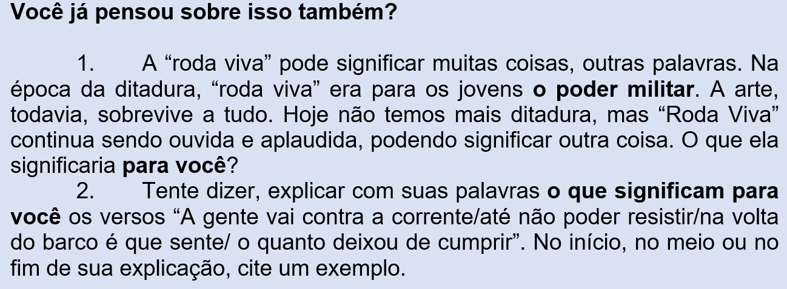
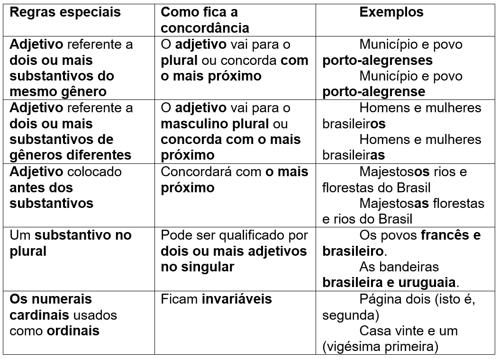
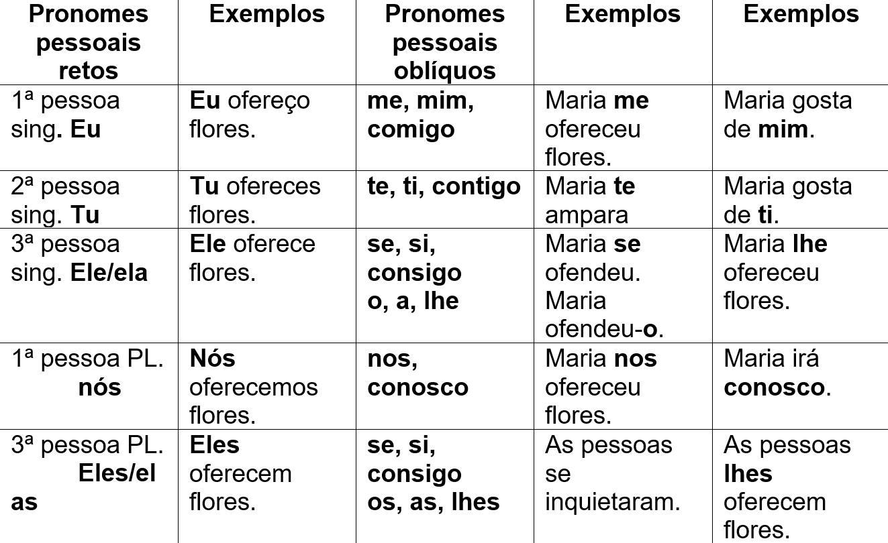

Capítulo 4: A literatura e a indústria têxtil e do vestúario
Contextualizando...
Questão-problema:
Quais relações podemos estabelecer entre o trabalho na indústria e a literatura? “Tecer” é também contar uma história?
Tecendo a Manhã
(João Cabral de Melo Neto)
Um galo sozinho não tece uma manhã:
ele precisará sempre de outros galos.
De um que apanhe esse grito que ele
e o lance a outro; de um outro galo
que apanhe o grito que um galo antes
e o lance a outro; e de outros galos
que com muitos outros galos se cruzem
os fios de sol de seus gritos de galo,
para que a manhã, desde uma teia tênue,
se vá tecendo, entre todos os galos
2
E se encorpando em tela, entre todos,
se erguendo tenda, onde entrem todos,
se entretendendo para todos, no toldo
(a manhã) que plana livre de armação.
A manhã, toldo de um tecido tão aéreo
que, tecido, se eleva por si: luz balão.

Reconstruindo conhecimentos:
A participação coletiva para o trabalho é evidenciada no poema de João Cabral de Melo Neto. O que importa parece ser, no início, a própria composição
da manhã e do próprio poema através da força da comunicação entre os galos. O discurso, deste modo, se concretizará, seja através das palavras, seja através
dos galos (trabalhadores) com seus gritos comunicantes e contagiantes. A partir do verso 03, a cumplicidade necessária entre os galos garantirá, através da
influência dos gritos de outros tantos galos, a continuação das construções apresentadas. Nasce, então, a manhã; nasce, então, o texto trabalhado também pelo
poeta e, assim, o discurso poético confeccionado pelas palavras-galos e trabalhadores-galos. No fim da primeira estrofe, a partir do verso 08, os fios ajudarão
a manhã para que esta “desde uma teia tênue, se vá tecendo, entre todos os galos (versos 09 e 10). O poeta antecipa, assim, a segunda estrofe com sua “tela”, “tenda”,
“toldo” e “tecido”. Na segunda estrofe, a corporificação da individualidade, requisitada ao longo da primeira estrofe, será concluída pela expressão-chave “luz balão”
(verso 06), sugerindo abertura, crescimento, plenitude e a singularidade da construção precisa da imagem final: a manhã (amanhã) e o poema são concretizados.

Vamos a mais dois textos que, na literatura brasileira, tematizam o trabalho. Escritos por Carlos Drummond de Andrade, ambos foram publicados no livro Contos Plausíveis.
Lavadeiras de Moçoró
(Carlos Drummond de Andrade)
As lavadeiras de Moçoró, cada uma tem sua pedra no rio; cada pedra é herança de família, passando de mãe a filha, de filha a neta, como vão passando as águas no tempo. As pedras têm um polimento que revela a ação de muitos dias e muitas lavadeiras. Servem de espelho a suas donas. E suas formas diferentes também correspondem de certo modo à figura física de quem as usa. Umas são arredondadas e cheias, aquelas magras e angulosas, e todas têm ar próprio, que não se presta a confusão. A lavadeira e a pedra formam um ente especial, que se divide e se unifica ao sabor do trabalho. Se a mulher entoa uma canção, percebe-se que a pedra a acompanha em surdina. Outras vezes, parece que o canto murmurante vem da pedra, e a lavadeira lhe dá volume e desenvolvimento. Na pobreza natural das lavadeiras, as pedras são uma fortuna, joias que elas não precisam levar para casa. Ninguém as rouba, nem elas, de tão fiéis, de deixariam seduzir por estranhos. Perceba que, assim como no poema Tecendo a manhã, o texto Lavadeiras de Moçoró aposta, também, em imagens poéticas como se percebe em “como vão passando as águas do tempo”, “servem de espelho”, “E suas formas diferentes também correspondem de certo modo à figura física de quem as usa.”, etc. Aí reside um ponto fundamental no texto ao apresentar tanto a pedra quanto a lavadeira de Moçoró como personagens de seus trabalhos, como “espelho” de uma herança de anos na estrutura familiar da lavadeira em destaque. As duas, lavadeira e pedra, “formam um ente especial”, pois a unificação de ambas tem nome: trabalho. A pedra é joia para a lavadeira, enquanto metáfora que o trabalho é valor fundamental na vida de uma pessoa de origem humilde (“pobreza natural das lavadeiras”).
Lavadeiras de Moçoró II
(Carlos Drummond de Andrade)
Entre as lavadeiras de Moçoró, Luzia se destaca. Sua pele é de ébano polido, reluzente, e dizem que roupa lavada por suas mãos, não há brancura que a suplante em todo o Norte. A pedra que Luzia recebeu de sua mãe, e esta de sua avó, faria inveja às outras lavadeiras, de tão grande e listrada de veios de cor, se Luzia não fosse tão boa colega. Frequentemente cede a sua pedra à vizinha que namora com os olhos uma coisa tão importante e boa de nela se bater roupa. Enquanto isso, Luzia afasta-se, fica pensando no marinheiro de Santos. Por que marinheiro, por que de Santos? Porque sua sina é casar-se com ele, segundo anuncia o sinal escrito na pedra. Luzia nunca saiu de Moçoró, e de marinheiros em geral tem escassa notícia. Mas Rufino a espera em Santos, é a pedra que o diz, lida e interpretada pela comadre de Luzia, que sabe a lição das coisas e nunca errou nos vaticínios. Lá vai Luzia a caminho de Santos, as colegas choram ao apitar o vapor, Luzia tem lágrimas nos olhos empapuçados e vermelhos. Na pedra ninguém tocará, é a pedra de Luzia, encantada. Salvo se a comadre descobrir nela novo destino.
Agora, neste “Lavadeiras de Moçoró – II”, Drummond especifica a lavadeira, no caso, Luzia. Ponto fundamental no início do texto é a solidariedade no trabalho, pois Luzia empresta seu instrumento de trabalho (a pedra que vem de gerações da família de Luzia) para uma colega que namora a pedra. A história, a partir desta cooperação entre trabalhadores, ganha o tom místico, pois a comadre de Luzia “lê”, através da pedra, o futuro de Luzia: esta conhecerá um tal de Rufino. A pedra, instrumento de trabalho, passa a ser também instrumento de adivinhação, metáfora do “ir além” que os trabalhadores têm em nível de conhecimento da vida de seus colegas de serviço. Afinal, não só de trabalho vive o homem, mas de poesia, de adivinhações, de esperanças e de profecias até, ao menos, estas mudarem com outras leituras para o destino de “Luzia”.

Para se contar uma história, ou melhor, para se escrever um texto narrativo, alguns elementos sempre estão presentes: são os elementos da narrativa (narrador,
personagens, espaço/cenário, tempo, enredo). Quando estamos lendo um texto, não ficamos, obrigatoriamente, identificando os elementos da narrativa, porém, ter
conhecimento desses elementos, pode nos auxiliar a compreender melhor o texto lido.
Conheça um pouco mais sobre os elementos da narrativa no esquema a seguir:
(Fonte: https://i1.wp.com/www.vestmapamental.com.br/wp-content/uploads/2020/04/Elementos-da-Narrativa-scaled.jpg?ssl=1)
Praticando:
Leia o texto a seguir. Trata-se de conto de Heloisa Seixas, uma escritora carioca que escreveu por alguns anos no jornal Folha de São Paulo na coluna chamada “Contos Mínimos”.
O menino e a catedral
O menino olhou em torno para ter certeza de que não estava sendo observado e ergueu devagar a toalha de renda. Em seguida mergulhou, desaparecendo.
A enorme mesa de madeira escura da sala de jantar, com pés de bolas sobrepostas, estava sempre coberta com uma toalha de renda que ia até o chão. Sob a
renda, havia uma espécie de forro, um pouco mais curto, feito de um tecido adamascado que barrava a luz, transformando o espaço debaixo da mesa num perfeito
esconderijo. E era ali que o menino costumava passar as manhãs, escondido, quando todos na casa pensavam que estava lá fora brincando.
Ele agora olhava em torno com seus grandes olhos castanhos, tão escuros quanto os pés da mesa. O sol brilhava no quintal e a casa inteira vivia grande agitação,
por conta da festa do dia seguinte, mas ali naquela sala raramente aberta – e mais ainda dentro de seu esconderijo – fazia sombra e silêncio.
Precisou de algum tempo para se acostumar à penumbra. Só então começou a perceber as ranhuras do chão de tábuas corridas, os desenhos na madeira, as pequenas
imperfeições. Isso era uma coisa de que gostava naquele seu observatório. Dali, podia ver o avesso das coisas: as entranhas da mesa, com seus encaixes onde a
madeira não fora bem polida, o ponto onde o chão era mais gasto, encerado com menos capricho. Entrava em contato com a intimidade dos objetos, com seus segredos.
De repente, uma porta se abriu.
E o menino ficou imóvel, à espera.
Estranho que entrassem na sala de jantar em dia de semana. Nunca faziam isso. Ouviu primeiro os passos, depois o ruído dos ferrolhos da janela, bem perto de onde
estava. Continuou quieto. Talvez fosse por causa da festa no dia seguinte. Com certeza iam abrir a sala para arejar. Agora, um barulho surdo, como um soco. Em seguida,
o estalo das janelas contra as paredes externas. E o sol inundou a sala, num segundo.
O menino piscou os olhos, atordoado.
Depois abriu-os bem. E sorriu, com surpresa.
Um raio de sol varava a renda, despejando-se no chão, onde estava ajoelhado. A luz, incidindo sobre o tecido do forro, tornara cor de pêssego o ar à sua volta,
onde voejavam grãos de poeira, como se fossem pássaros num templo abandonado. Seu pequeno mundo – o mundo onde as coisas existiam pelo avesso – brilhava.
O esconderijo se transformara numa catedral de luz.
Agora, consulte o esquema explicativo sobre os elementos da narrativa e identifique cada um deles no conto “O menino e a catedral”.
Narrador -
Personagens -
Tempo -
Espaço -
Enredo -
O que aprendi:
- Textos narrativos contam uma história.
- Os elementos da narrativa são:
Narrador: quem conta a história
Personagens: quem participa da história
Tempo: quando acontecem os fatos
Espaço: ambiente no qual acontecem os fatos
Enredo: o desenrolar dos acontecimentos